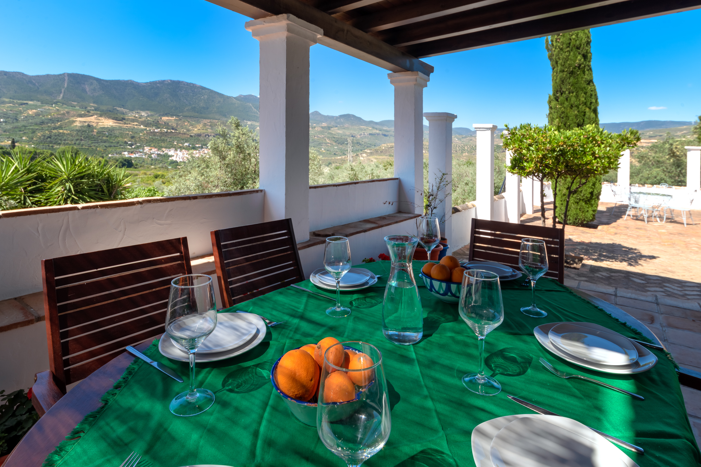
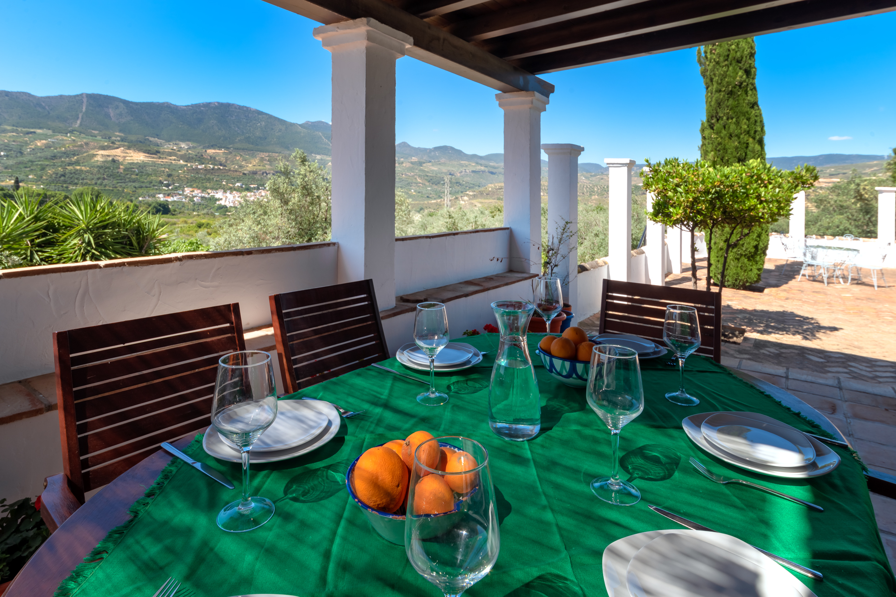
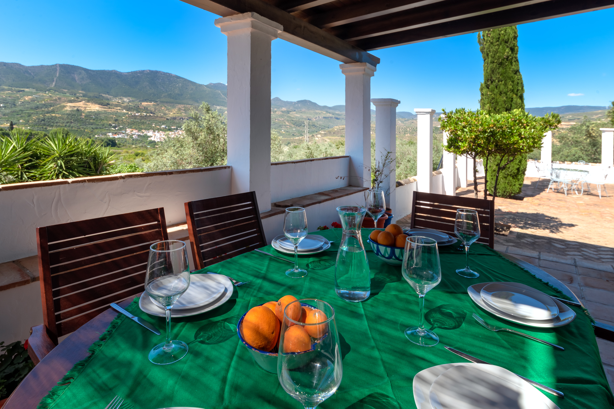
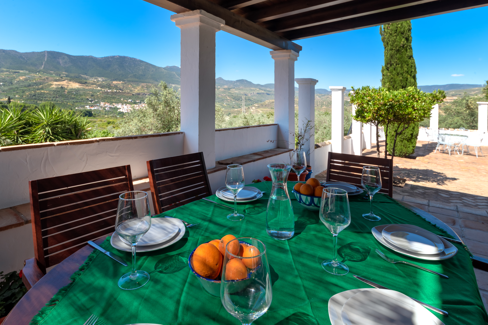

 

Situated in the heart of the Lecrin valley, an area of outstanding natural beauty. Its lush verdant landscape (due to the runoff from sierra Nevada) making this an ideal destination for anyone looking for a quiet and relaxing holiday, while in easy reach of the beautiful, historic city of Granada and only half an hours drive from Costa Tropical. Just a few minutes drive from the village of Melegis, this lovely Andaluz style villa awaits you.
A working fruit farm, set in 10,000 square meters of gardens and orchards for you to explore. Planted with fruit trees of every kind - There are lemons, oranges, pears, apricots, cherries, avocados, peach, loquats, grapes and more for you to take your pick and savour directly from the tree. This area is blessed with a climate that will allow you to enjoy the delights of the gardens and surrounding valley no matter what the time of year.
To reach the house you follow a narrow country lane that winds out from the village through the generation-old small holdings - The acequia (irrigation channel) murmuring along its path as it has since long ago when these lands were cultivated by the Moors. You arrive at the house through two large black metal gates, into a car park area large enough for five or more cars. Shaded on one side by olive trees, the other tall palm trees, bushes and flower beds line the façade of the house. The rest of the house is surrounded by patios galore!
Immediately to the right of the entrance gate is a large terra-cotta tiled terrace with a water feature in the centre. From here two steps up to the beam covered front porch, an ideal spot to enjoy the views across the valley to the mountains beyond and breathe in the intoxicating scents of all the wondrous aromatic plants and flowers around you! From this front terrace, a very narrow stairway is a shortcut down to the terraced area, and orchards, below.
The entrance drive/parking area is also the home of a large built-in BBQ and wood-burning oven, for anyone who wants to make a real meal of it during the cooler months! Stepping inside, the house feels cool and airy. Entering from the porch directly into the living / dining room, the white walls, the dark polished terra-cotta tiles, the white leather sofas, the dark wood of the table and woodwork, the large windows looking back onto the porch, make this an inviting living area - perfect for cooler evenings in front of the fireplace or to escape from the midday sun for a short siesta.
On this ground level, a small hallway from the living room gives access to a twin bedroom, with en-suite shower room, and to the kitchen. A spacious, white, functional kitchen with all the necessaries to prepare delicious meals with the fresh salad and vegetables that are grown in the kitchen garden and provided by the gardener who comes to care for the grounds and fruit trees 4 mornings a week. From this same hallway, stairs go upstairs and down. On the upstairs level, there are two double bedrooms, the first with en-suite shower room the second with the shower room directly beside (not en-suite but as good as). All the bedrooms in the house have cupboards and storage space for clothes.